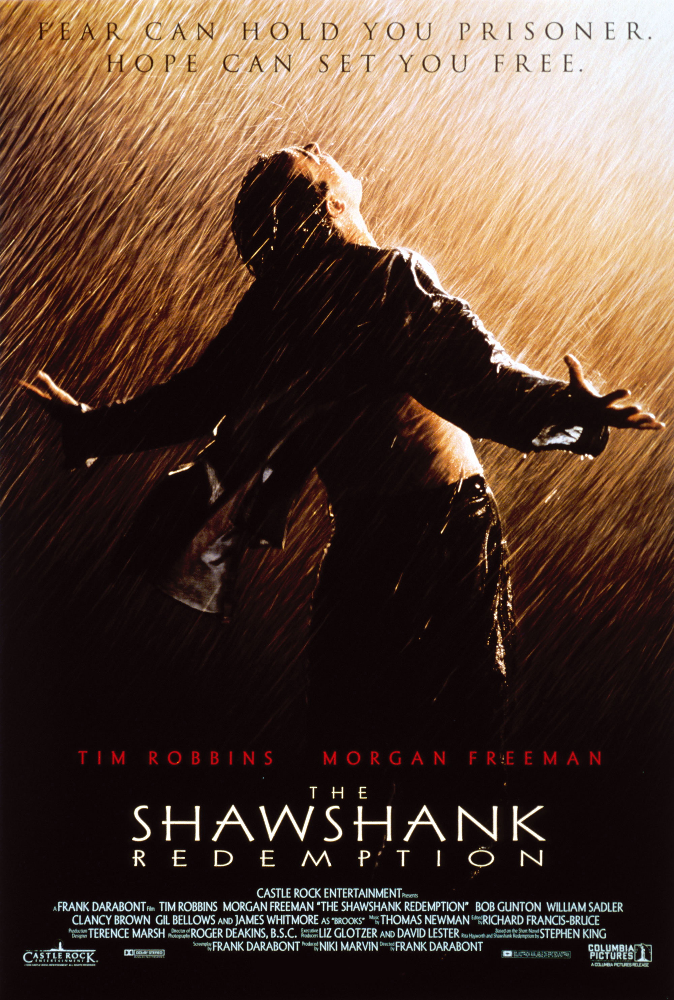

肖申克的救赎（The Shawshank Redemption，1994）
一句话短评：
内容简介：
- 一场谋杀案使银行家安迪（蒂姆•罗宾斯 Tim Robbins 饰）蒙冤入狱，谋杀妻子及其情人的指控将囚禁他终生。在肖申克监狱的首次现身就让监狱“大哥”瑞德（摩根•弗里曼 Morgan Freeman 饰）对他另眼相看。瑞德帮助他搞到一把石锤和一幅女明星海报，两人渐成患难 之交。很快，安迪在监狱里大显其才，担当监狱图书管理员，并利用自己的金融知识帮助监狱官避税，引起了典狱长的注意，被招致麾下帮助典狱长洗黑钱。偶然一次，他得知一名新入狱的小偷能够作证帮他洗脱谋杀罪。燃起一丝希望的安迪找到了典狱长，希望他能帮自己翻案。阴险伪善的狱长假装答应安迪，背后却派人杀死小偷，让他唯一能合法出狱的希望泯灭。沮丧的安迪并没有绝望，在一个电闪雷鸣的风雨夜，一场暗藏几十年的越狱计划让他自我救赎，重获自由！老朋友瑞德在他的鼓舞和帮助下，也勇敢地奔向自由。
短评：
- “这是一部男人必看的电影。”人人都这么说。但单纯从性别区分，就会让这电影变狭隘。《肖申克的救赎》突破了男人电影的局限，通篇几乎充满令人难以置信的温馨基调，而电影里最伟大的主题是“希望”。 当我们无奈地遇到了如同肖申克一般囚禁了心灵自由的那种囹圄，我们是无奈的老布鲁克，灰心的瑞德，还是智慧的安迪？运用智慧，信任希望，并且勇敢面对恐惧心理，去打败它？ 经典的电影之所以经典，因为他们都在做同一件事——让你从不同的角度来欣赏希望的美好。 ——Eve|Classified
可播放资源：
- 哔哩哔哩 VIP免费观看
- https://www.bilibili.com/bangumi/play/ss28274?bsource=douban